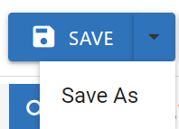
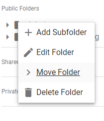
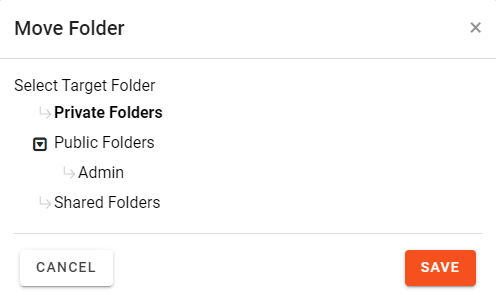

Note: If Technology-Assisted
Review (TAR) projects are implemented at your site, they show up in the TAR Projectspane. Use these searches as directed by your administrator.
For more information, see
Saved searches can be public, private, or they can be limited to certain user groups that have access to the case or review batch in which the search is created/saved. Search access is managed through folders as described later in this section.
Specific permissions are required for working with saved searches. Ask your administrator if you are not able to perform the activities explained in this section and it impacts your document review.
|
|
Note: If Technology-Assisted
Review (TAR) projects are implemented at your site, they show up in the TAR Projectspane. Use these searches as directed by your administrator.
For more information, see |
To save a search configured on the Visual Search dashboard, perform the following steps:
In

Click the Enter Case button at the bottom-right corner. The Visual Search dashboard appears. The full-screen icons allow you to see each dashboard area in full-screen view.

Define your visual search. For information about how to accomplish this on the Visual Search dashboard, see
When your search definition is complete, click the Save button at the top-right corner of the screen. The Save Search dialog box appears.

Enter a name for the search in the Search Name field.
|
|
Note: Once you save a search, you have the option to rename it, or create a new search from the existing one. |
To save an Advanced Search, perform the following steps:
In
Click the Enter Case button at the bottom-right corner. The Visual Search dashboard appears. The full-screen icons allow you to see each dashboard area in full-screen view.
In the dashboard, go to Need to construct an Advanced Search? at the upper right corner and click Advanced Search. The Advanced Search case view appears.

Define your Advanced Search. For information about how to accomplish this see
When your search definition is complete, click either the Save or Save & Search button at the top-right corner of the screen.
The Save Search dialog box appears. Enter a name for the search in the Search Name field.
|
|
Note: Once you save a search, you have the option to rename it, or create a new search from the existing one. |
The Saved Searches & Smart Folders panel contains the folder hierarchy showing where you have stored your searches. The hierarchy comprises folders that are labeled Private, Public, and Shared.
For the definition of these folders and how to create, edit, and delete them, see

In addition, the panel lists Smart Folders. For a definition of how Smart Folders work, see

Recent Searches are also displayed in the panel. When a Visual Search or an Advanced Search is conducted, the Recent Searches area in the Saved Searches & Smart Folders panel allows you to locate the search.

|
|
Note: A horizontal scroll bar in the Saved Search area now displays when the search name is too long to view the entire name at once. |
After a search is saved, you can perform the following defined tasks:
To run a saved search:
In
Click the Enter Case button.

Hover over the search icon  on the top left of the screen to open the Saved Searches & Smart Folders panel.
on the top left of the screen to open the Saved Searches & Smart Folders panel.
Click the pushpin to keep the panel open.

Either click the Search button or the
|
|
Note: Regardless of where you run the Saved search, it will open in the window (Visual or Advanced) in which it was saved. |
To modify a saved search:
In
Click the Enter Case button.
Hover over the search icon on the top left of the screen to open the Saved Searches & Smart Folders panel.
Click the pushpin to keep the panel open.
Right-click the search and select Edit Search.
Change the search as required and described in the following table.
|
search type |
notes |
|
Analytics |
Expand the area and make required changes. |
|
Text Search |
Expand the area and make required changes. |
|
Field Search |
Make any of the following changes:
|
|
|
Note: You can also set additional sort criteria and set random sampling options. |
To rename a saved search:
In
Click the Enter Case button.
The Visual Search Dashboard displays as default. Saved searches can be renamed from either Visual Search or Advanced Search. Click the link in Need to construct an Advanced Search? in the top right of the dashboard to rename the search from Advanced Search.
Hover over the search icon on the top left of the screen to open the Saved Searches & Smart Folders panel. Click the pushpin to keep the panel open.
In the Saved Searches & Smart Folders panel, locate the required search.
Click into the Search Name field and type the new name.
Hit the Save button.
|
|
Note: If you wish to create a new search with a similar name from the existing saved search, hit the Save As button from the Save dropdown menu.
 |
Saved searches can be deleted unless they are being used by another saved search.
To delete a saved search:
In
Click the Enter Case button.
Hover over the search icon on the top left of the screen to open the Saved Searches & Smart Folders panel.
Click the pushpin to keep the panel open.
In the Saved Searches & Smart Folders panel, locate the required search.
Right-click the search and select Delete Search.
A warning dialog box appears.
To create a new search based on a saved search:
In
Click the Enter Case button.
Hover over the search icon on the top left of the screen to open the Saved Searches & Smart Folders panel.
Click the pushpin to keep the panel open.
In the Saved Searches & Smart Folders panel, locate the required search.
Right-click the search and select Copy Search.
The Copy Search dialog box appears.

|
|
Note: You can also apply a production shield to a saved Public search. A production Shield allows another layer of protection for documents that should not be exported (or produced). When using Production Shield, such documents are identified during the validation phase of the export process, giving administrators the opportunity to correct conflicts and ensure only appropriate documents are produced. For more information, see |
To move a Saved Search folder under a Public, Private, or Shared folder:
Right click the folder you want moved and select Move Folder.

Select the target folder and click 

|
|
Note: A horizontal scroll bar in the Saved Search area now displays when the search name is too long to view the entire name at once. |
Related Topics
 and make changes in the area below the statement being edited.
and make changes in the area below the statement being edited.